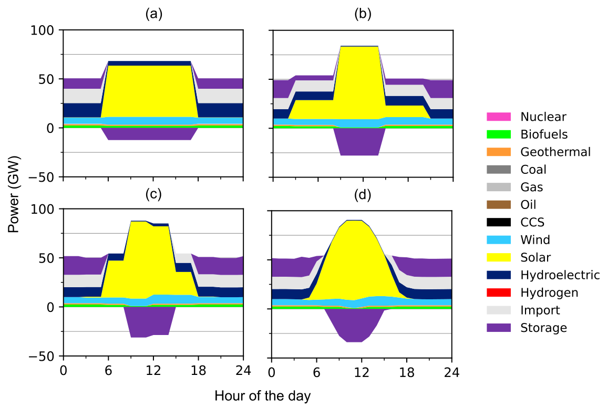

Energy storage in long term planning
Collaboration: Matteo Nicoli’s 2023 research visit to NC State, with Anderson R. de Queiroz and Laura Savoldi. I contributed to the study’s conceptualization and methodology, and to reviewing and editing the paper.
How much storage does a decarbonizing energy system need, and how much of the answer depends on the way a planning model represents time? This study connects daily charging and discharging decisions with long-term investment in Italy’s energy system, including interactions with transport, buildings, industry, and hydrogen production.
Representing daily operation in long-term planning
The framework refines TEMOA’s representation of renewable capacity factors and final energy service demands, then tracks stored energy between chronological time slices. Preprocessing assembles the time structure and technology inputs; postprocessing reconstructs the generation mix and storage operation within each representative day.
The Italian application compares 2, 4, 8, and 24 time blocks per day, with four seasons, alongside scenarios that vary emissions constraints and technology availability. Batteries of different durations compete with existing pumped hydro, while additional cases examine alternative electricity storage, hydrogen storage, reduced hydropower availability, and nuclear generation. Comparing these cases separates the effects of time resolution from those of technology availability.

Time resolution changes modeled storage operation. Figure 9 from Nicoli et al. (2024) compares 2, 4, 8, and 24 time blocks per day, from (a) to (d). Negative purple values indicate charging; positive purple values indicate discharge. Finer resolution captures the solar peak and the hours when stored electricity supplies demand.
Storage needs depend on time resolution and technology choices
In the examined decarbonization scenarios that allow new electricity storage and exclude nuclear generation, 8–13% of annual electricity production passes through storage by 2050. Storage deployment reaches approximately 40 GW and 250 GWh, corresponding to about six hours of average duration. These estimates depend on the scenarios’ technology and policy assumptions.
Storage output increases as more daily detail is represented, even when renewable penetration changes little. Results change relatively little between eight and twenty-four daily blocks in this application, while total model processing time rises from 147 seconds with two blocks to 1,451 seconds with twenty-four on the study’s hardware. This comparison helps assess how much additional operating detail justifies the extra computation.
Technology assumptions are equally important. Without new storage and without nuclear generation, some natural gas generation remains necessary to balance the system. When the study permits about 10 GW of nuclear capacity under its assumed costs and constraints, nuclear generation displaces part of the renewable portfolio and storage is no longer selected in the modeled optimum.
The representative days describe average seasonal behavior. They do not resolve extreme weather, subhourly variation, or all unit-commitment constraints. Testing the resulting portfolios against these conditions would require a more detailed operational model.
Paper and presentation
Nicoli, de Faria, de Queiroz, and Savoldi (2024). Modeling energy storage in long-term capacity expansion energy planning: an analysis of the Italian system. Journal of Energy Storage.
Read the paper · Official Temoa repository
INFORMS 2023 presentation (PDF), presented by Matteo Nicoli on October 15, 2023.